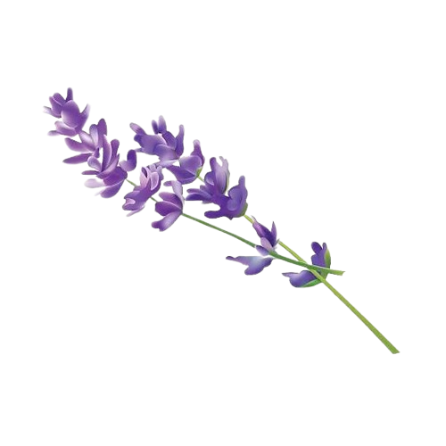
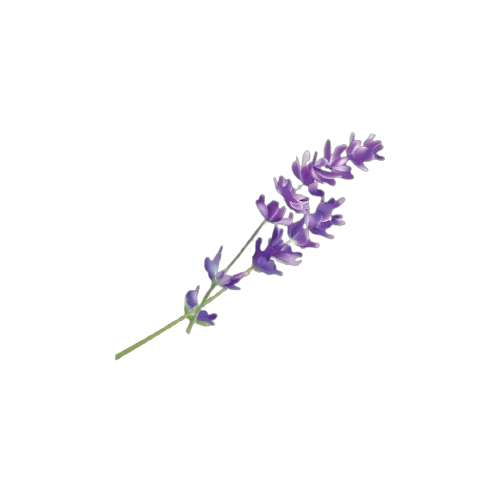
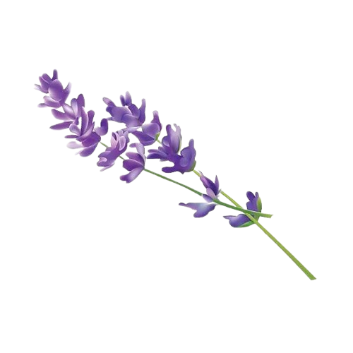
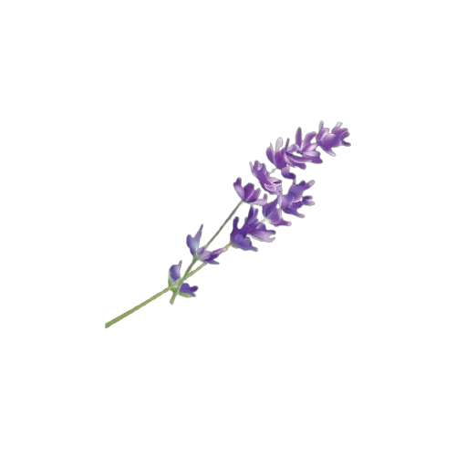

hashem abu safa
تشهد المملكة الأردنية الهاشمية تطورًا ملحوظًا في مجال العمل الحر، حيث أصبحت المرأة الأردنية جزءًا لا يتجزأ من هذا السوق. فقد ارتفع عدد النساء العاملات في مجال العمل الحر في الأردن خلال السنوات الأخيرة بشكل كبير، حيث بلغ عددهن حوالي 200 ألف امرأة في عام 2022.
عوامل تطور العمل الحر في الاردن:
١- التقدم التكنولوجي: ساهم التقدم التكنولوجي في تسهيل العمل الحر، حيث أصبح من الممكن العمل من أي مكان في العالم وباستخدام أي جهاز إلكتروني.
٢- زيادة وعي المرأة الأردنية بأهمية العمل الحر:أصبح المجتمع الأردني أكثر وعياً بأهمية العمل الحر، حيث أصبح ينظر إليه على أنه فرصة لزيادة الدخل وتحقيق الذات.
٣- الحاجة إلى العمل: في ظل الظروف الاقتصادية الصعبة التي تمر بها المملكة الأردنية، أصبحت المرأة الأردنية بحاجة إلى العمل الحر لزيادة دخلها ودعم أسرتها.
مجالات عمل المرأة الأردنية في مجال العمل الحر
تتنوع مجالات عمل المرأة الأردنية في مجال العمل الحر، حيث تعمل في مجالات عديدة منها:
- الكتابة والترجمة: تعمل العديد من النساء الأردنيات في مجال الكتابة والترجمة، حيث يترجمن بين اللغات المختلفة أو يكتبن المقالات والأخبار.
- تصميم الجرافيك: تعمل العديد من النساء الأردنيات في مجال تصميم الجرافيك، حيث يقمن بتصميم اللوحات الإعلانية والشعارات والمواقع الإلكترونية.
- التسويق الإلكتروني: تعمل العديد من النساء الأردنيات في مجال التسويق الإلكتروني، حيث يقمن بتسويق المنتجات والخدمات عبر الإنترنت.
- البرمجة: تعمل العديد من النساء الأردنيات في مجال البرمجة، حيث يقمن بتطوير البرامج والتطبيقات.
- التجارة الإلكترونية: تعمل العديد من النساء الأردنيات في مجال التجارة الإلكترونية، حيث يقمن ببيع المنتجات والخدمات عبر الإنترنت.
ناريمين: من شغف بالطبخ إلى نجاح في عالم صناعة الكوكيز
في مقابلة حصرية مع أهم النساء العاملات في محافظة الزرقاء، التقينا بالسيدة ناريمين، وهي مختصة في خبز البسكويت "الكوكيز" بأشكال مختلفة تناسب كافة المناسبات.
بدأت ناريمين مشروعها منذ حوالي ثمانية سنوات، بعد شغفها بالطبخ والحلويات، ورغبتها في تحقيق ذاتها واستقلاليتها ماليًا. بدأت بتحضير الكوكيز في المنزل، وتسويقها عبر وسائل التواصل الاجتماعي.
سرعان ما نالت ناريمين نجاحًا واسعًا في المحافظة، حيث أصبحت وجهةً مفضلةً للكثيرين من محبي الكوكيز. تتميز الكوكيز التي تصنعها ناريمين بجودتها العالية وأشكالها المميزة، والتي تتناسب مع كافة المناسبات، مثل أعياد الميلاد، وحفلات الزفاف، وحفلات التخرج، وغيرها.
منال أبو حلاوة .. أردنية غيّرت حياتها
استطاعت منال ابو حلاوة من خلال عملها في مطبخ الكرمة التابع لمؤسسة نهر الاردن بجبل النظيف بعمان ان تحسن من مستوى دخل اسرتها ومساعدتها في التغيير نحو الافضل وتوفير فرصة لعيش كريم .
ومن خلال دخلها الذي تحصل عليه من المركز استطاعت ابو حلاوة ان تحقق حلم ابنتها بالتحاقها في احدى الجامعات مثلما انها تساعد زوجها في توفير مستلزمات واحتياجات العائلة والتغلب على صعوبات وتحديات الحياة .
وتعبر منال عن ارتياحها في العمل بالمطبخ لقربه من مكان سكنها الى جانب اجوائه المريحة في التعامل بين الموظفات،حيث تقول "نشعر اننا جمعيا عائلة واحدة وهذا ما اضاف لمسة انسانية اجتماعية بين الجميع ساهمت في تطوير اليات العمل". وتضيف ابوحلاوة انها بدأت بصنع المعمول "كعك العيد" بانواعه الذي يتميزبه المطبخ حيث "نقوم بانتاجه بطريقة تقليدية تمنحه نكهة تذكرنا بحلويات الامهات والجدات بايدي السيدات في جبل النظيف وتبين ان انخراطها في بيئة العمل زاد من مسؤولياتها حيث اصبحت تسعى جاهدة للتوفيق بين اسرتها وعملها وتدريس ابنائها، ولكن كل ذلك صنع بداخلها التحدي الذي جعلها تخط قصة نجاحها وتعيش حياتها كنحلة نشطة والنظام شعارها.
وتزيد ابوحلاوة ان من التغييرات التي طرأت على حياتها انها قبل الالتحاق بمطبخ الكرمة كانت لاتميل الى الخروج من البيت فتقضي اغلب وقتها دون فائدة، ولكنها اليوم استطاعت ان تنمي من شخصيتها وتصبح انسانة اجتماعية ومنتجة تساهم في تنمية اسرتها ومجتمعها . اليوم منال ابوحلاوة تعتبر قدوة لنساء المنطقة ويتطلع لها الجميع بعين الاحترام لقدرتها على اثبات نفسها من خلال العمل في مطبخ الكرمة الذي اتاح لها فرصة كبيرة في ان تعيش حياة كريمة واسرتها. يذكر ان مركز الكرمة هو احد المشاريع التنموية التابع لمؤسسة نهر الاردن في جبل النظيف والذي يعمل بهدف تمكين المجتمعات وخلق فرص اقتصادية للافراد ودرب نحو 210
سيدة على مهارات الطبخ والتصنيع الغذائي فيما درب في مجال التطريز ومهارات القص والخياطة نحو 290 سيدة.
الزي التراثي السلطي
السيدة ثائرة عربيات من مدينة السلط هي مثال ناجح للسيدات العاملات، حيث تهتم بالقطاع النسائي والشبابي، بدأت منذ الصغر في تطوير هوايتها وهي التطريز الذي ساعدها على فتح مشروعها وهو تطريز الاثواب السلطية التراثية والشماغ الاردني الذي ساعد على تكوين مصدر دخل جيد لها ولعائلتها.
لم تتوقف عربيات هنا بل تقوم في تقديم دورات تدريبية في مختلف انحاء الوطن للنساء في مجال تطريز الاثواب والشماغ الاردني
بصناعة المعجنات.. أردنية تعيل أسرتها بعد فقدان زوجها
منار علاونة فقدت زوجها لتجد نفسها أمّاً بكل مواصفات الأب، فكافحت لإعالة أسرتها الصغيرة ومساعدة أسرتها الكبيرة بدأت بصناعة الكعك والمعجنات متنقلةً بين المحافظات المختلفة لتستقر أخيراً بالعاصمة عمّان في مكان خاص بمنتجاتها رغم أن ظروف عملها أبعدتها عن أفراد أسرتها الكبيرة إلا أنها استمرت في التواصل معهم ومساعدتهم
رغم أنها ابنة وزير سابق، إلا أن ذلك لم يمنع عنها ضنك العيش، إذ عانت من ظروف قاسية دفعتها لوصف حياتها بأنها "سواد"، لكنها قاومت بعزيمة وإصرارٍ قسوة الأيام التي مرّت بها.
السيدة منار علاونة (46 عاما) عاشت في كنف أبويها بمنطقة الطّيبة في محافظة إربد شمالي الأردن، إلى جانب أشقائها وشقيقاتها (4 ذكور و7 إناث)، لكن سرعان ما غادرتهم إلى بيت الزوجية وهي ابنة 14 عاماً.
تحوّلت هي الأخرى إلى أمّ لثلاثة أولاد وابنتين أنجبتهم في 8 سنوات من زواجها، وأصبحت بعدها جدّة لخمسة أحفاد.
فقدت زوجها لتجد نفسها أمّاً بكل مواصفات الأب، فلم تخضع لليأس لتعيل أسرتها الصغيرة أو تغض الطرف عن مساعدة أسرتها الكبيرة، فبدأت رحلة كفاح تكللت بالنجاح.
أثبتت السيدة منار أن الإصرار على تحدّي الظروف وتحديد الوجهة الصحيحة، عوامل مهمة لكي يُحّقق الإنسان ذاته ويصل لأهدافه.
أميرة وحلمها الوليد
في مدينة إربد الأردنية، كانت هناك فتاة تدعى أميرة تبلغ من العمر 25 عامًا. كانت أميرة فتاة طموحة ونشيطة، وكانت تحلم بفتح مشروعها الخاص. كانت تحب الطبخ، وكانت تعتقد أن لديها موهبة في هذا المجال.
ذات يوم، قررت والدة أميرة فتح مطبخ إنتاجي. كانت والدة أميرة امرأة قوية وشجاعة، وكانت تؤمن بقدرة ابنتها على تحقيق أحلامها. ساعدت أميرة والدتها في إعداد المطبخ وشراء المعدات اللازمة.
في البداية، كان عمل المطبخ الإنتاجي بطيئًا. كان الناس لا يزالون يترددون في شراء الطعام من امرأة غير متزوجة. لكن أميرة لم تستسلم، وواصلت العمل بجد.
بدأت أميرة في الترويج لمنتجات المطبخ الإنتاجي عبر وسائل التواصل الاجتماعي. كما بدأت في تقديم الطعام في المناسبات الخاصة. سرعان ما بدأ الناس يتعرفون على جودة الطعام الذي تقدمه أميرة، وبدأ الطلب على منتجاتها في الزيادة.
واجهت أميرة ووالدتها بعض الصعوبات بسبب العيب المجتمعي. كان بعض الناس ينظرون إلى عملهما نظرة دونية، ويعتقدون أنهما لا يجب أن يعملان خارج المنزل. لكن أميرة ووالدتها لم يثنهما ذلك عن تحقيق أحلامهما.
اليوم، أصبح مطبخ أميرة الإنتاجي من أشهر المطابخ في مدينة إربد. تقدم أميرة مجموعة متنوعة من الأطباق الشهية، والتي تحظى بإقبال كبير من الناس. كما أن أميرة ووالدتها مصدر إلهام للنساء في المنطقة، ويثبتان أن المرأة يمكنها تحقيق أي شيء إذا وضعت عقلها في ذلك.
تلعب المرأة الأردنية دورًا مهمًا في مجال العمل الحر، حيث تساهم في تنمية الاقتصاد الوطني وتعزيز مكانة المرأة في المجتمع. ومع اتخاذ الإجراءات اللازمة لتعزيز دور المرأة الأردنية في مجال العمل الحر، فإنها ستتمكن من تحقيق المزيد من النجاحات في هذا المجال.